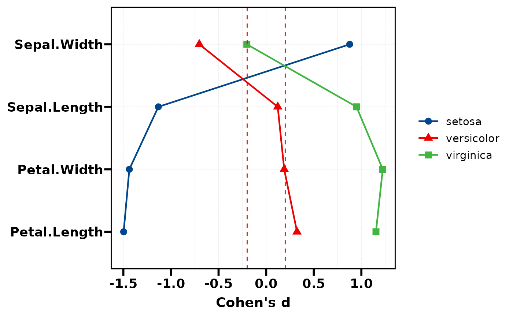
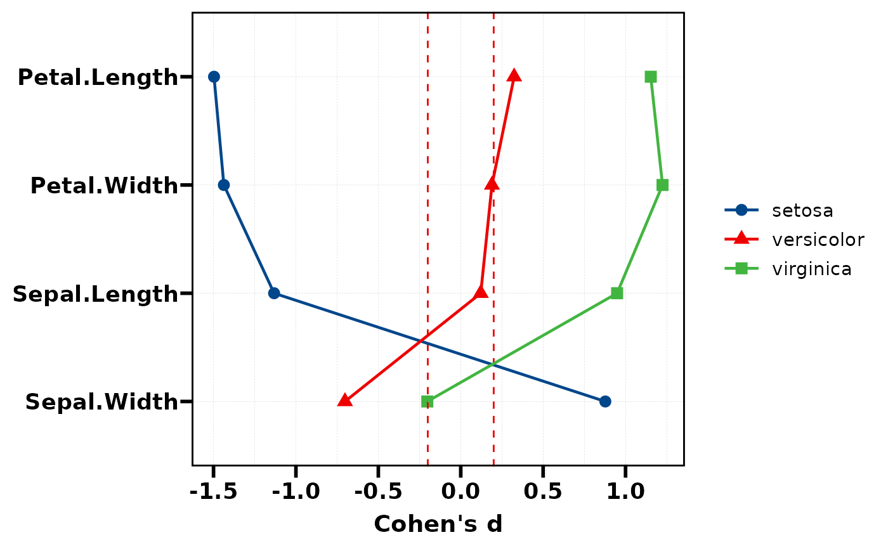
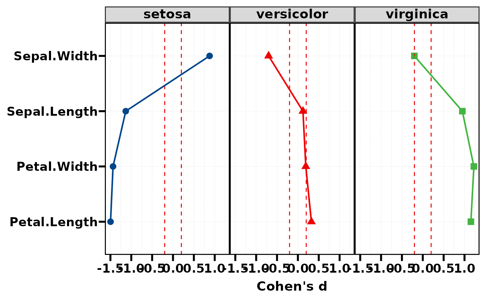
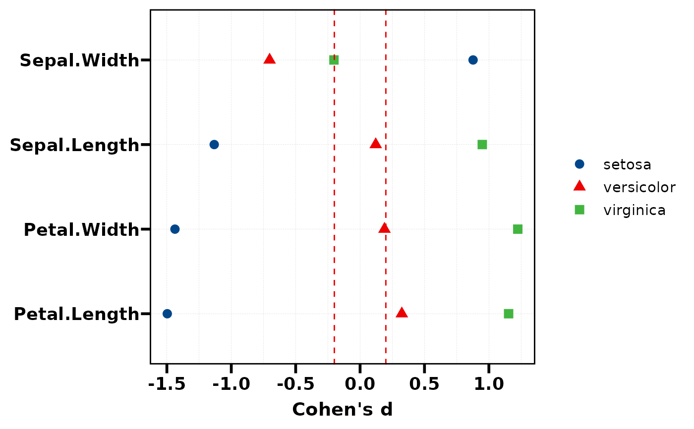
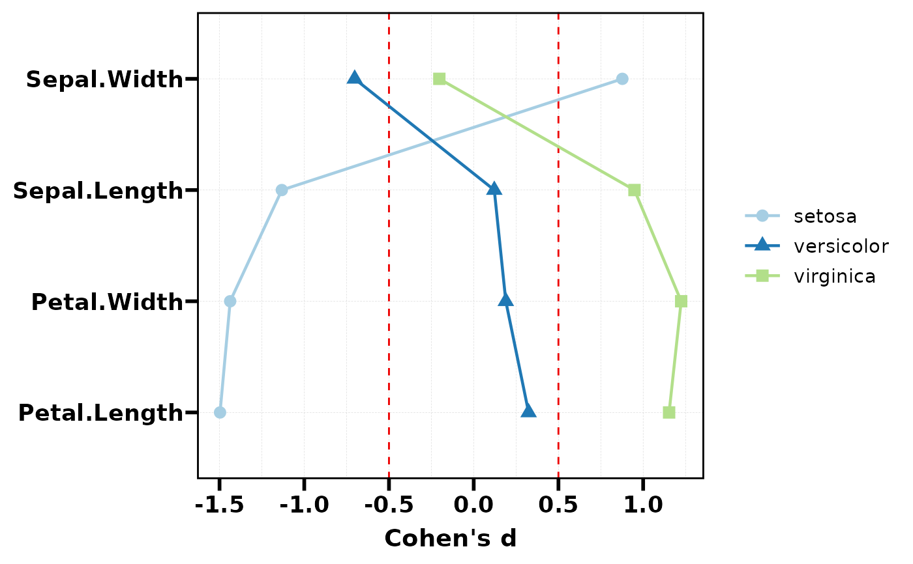
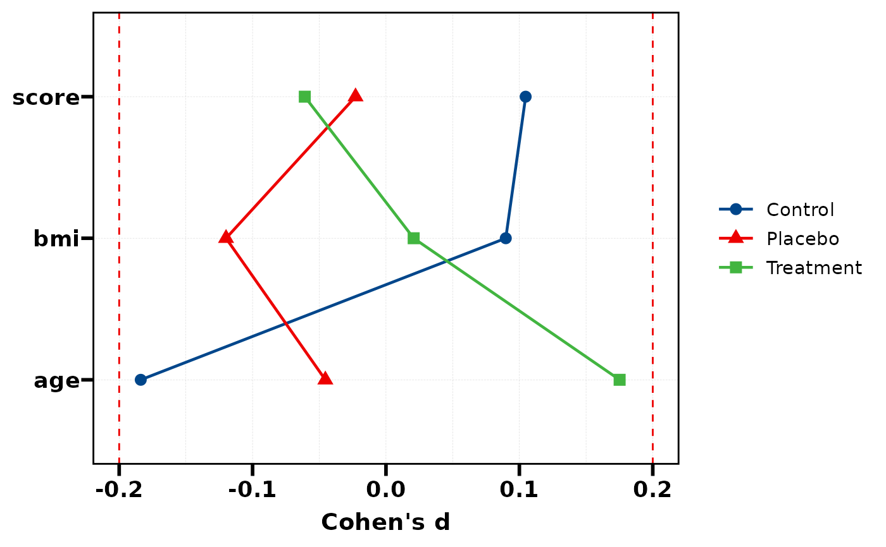
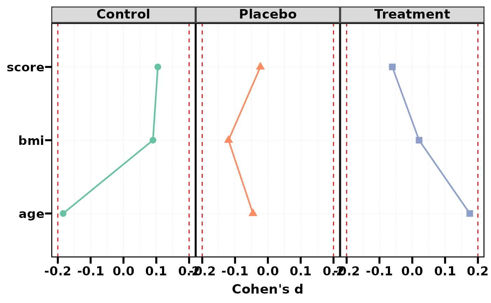

Visualise Cohen's d values as a Cleveland dot plot (lollipop chart). Variables are ordered by the effect size of a reference group. Dashed lines at +/-0.2 indicate the small effect threshold.
Usage
plt_cohen(
res,
ref_group = NULL,
palette = NULL,
threshold = c(-0.2, 0.2),
add_line = TRUE,
facet = FALSE,
base_size = 14
)Arguments
- res
Data frame from
stat_cohen(): first column isVariable, remaining columns are Cohen's d per group.- ref_group
Character, name of the reference group column used for sorting. Default
NULLuses the first group column.- palette
Colour palette name or character vector of colours. Default uses
pal_lancet.- threshold
Numeric, dashed reference line positions for small effect. Default
c(-0.2, 0.2).- add_line
Logical, connect dots with lines. Default
TRUE.- facet
Logical, facet by group. Default
FALSE.- base_size
Base font size. Default 14.
See also
Other plot:
PlotButterfly(),
PlotButterfly2(),
PlotRankCor(),
plt_cat(),
plt_con(),
plt_dist(),
plt_radar(),
plt_sankey(),
plt_upset()
Examples
# Using iris data
res <- stat_cohen(iris, group = "Species",
vars = c("Sepal.Length", "Sepal.Width",
"Petal.Length", "Petal.Width"))
# Basic dot plot
plt_cohen(res)

# Sort by a specific group
plt_cohen(res, ref_group = "versicolor")

# With facet per group
plt_cohen(res, facet = TRUE)

# Without connecting lines
plt_cohen(res, add_line = FALSE)

# Custom threshold and palette
plt_cohen(res, threshold = c(-0.5, 0.5), palette = "Paired")

# Simulated multi-group data
df <- data.frame(
group = factor(sample(c("Control","Treatment","Placebo"), 150, TRUE)),
age = rnorm(150, 50, 10),
bmi = rnorm(150, 25, 5),
score = rnorm(150, 100, 15)
)
res2 <- stat_cohen(df, "group", c("age", "bmi", "score"))
plt_cohen(res2)

plt_cohen(res2, facet = TRUE, palette = "Set2")
